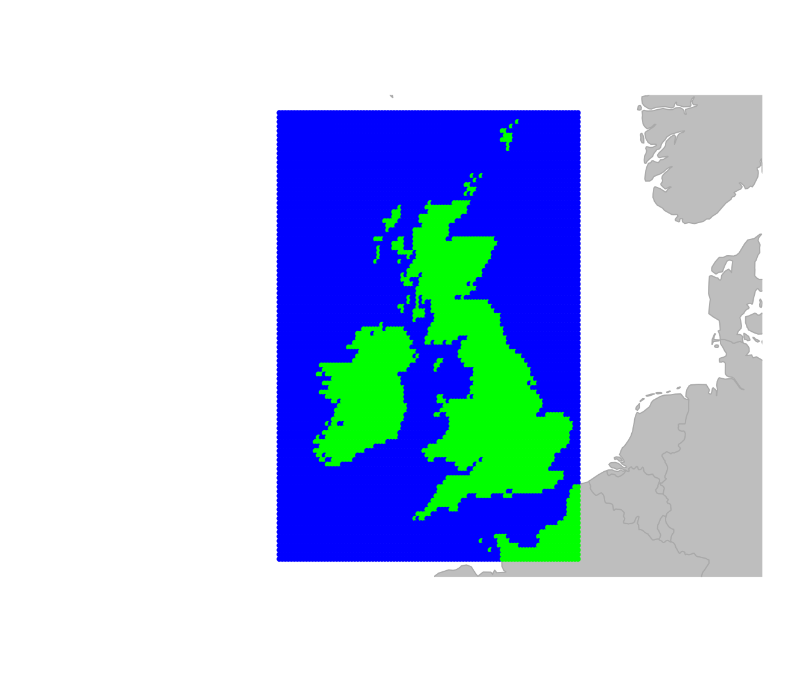
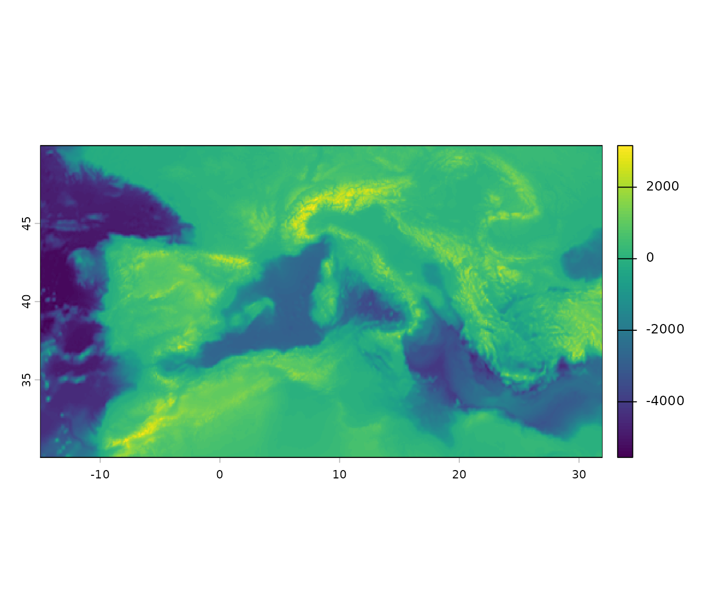
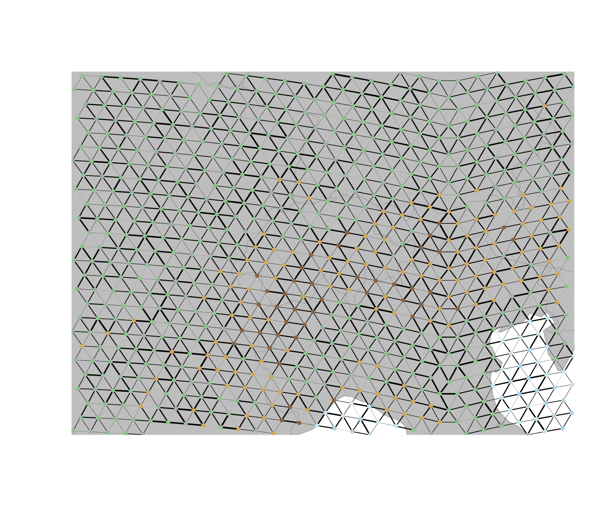
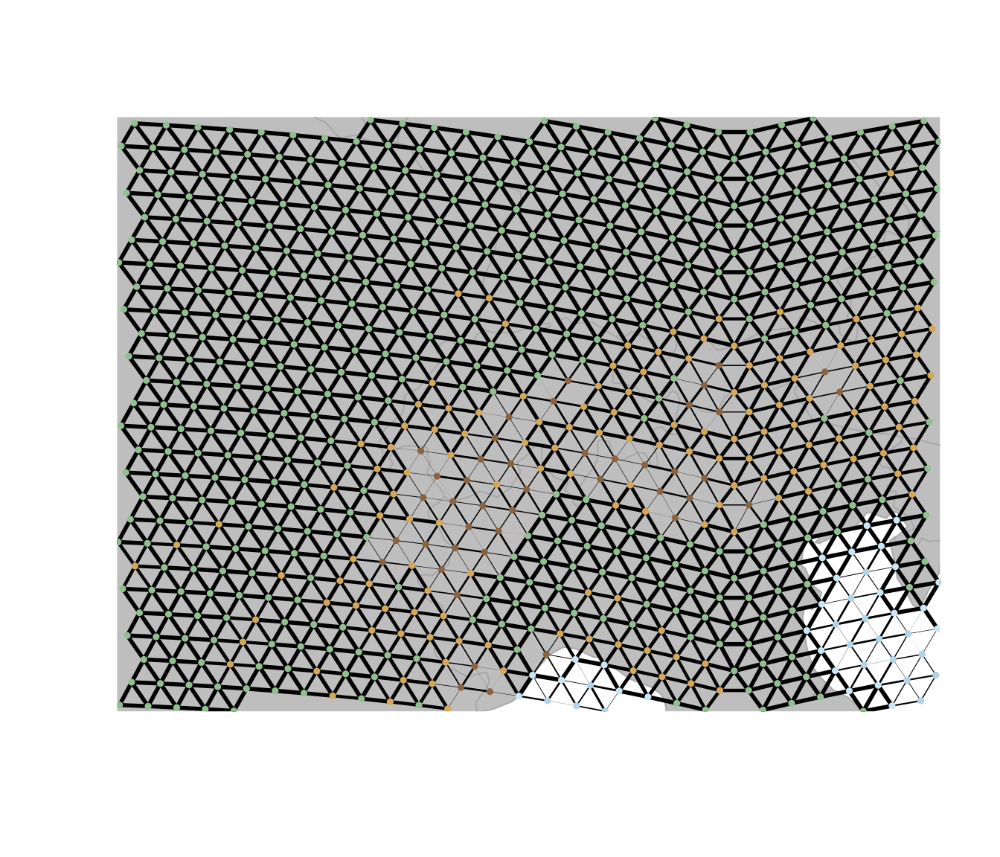

Making custom grids in geoGraph
Dominik Jud
2026-02-20
Source:vignettes/a1_making_grids.Rmd
a1_making_grids.RmdThis vignette illustrates how to create custom gGraph
objects in geoGraph and how to assign environmental information
to the nodes of the graph. The gGraph objects can either be
constructed using a square grid or using a discrete global grid. The
latter is especially useful when working over larger areas of the world,
where the square grid would introduce messy distortions. Using the
dggridR package, we can create a custom hexagonal grids
that provides a more accurate representation of the Earth’s surface.
Creating a custom square grid
We can create a custom square grid using the makeGrid
function. This function allows us to specify the approximate number of
the grid cells and the geographic bounding box for the area of interest
(by setting the range for both the latitude and longitude of the grid) .
In this example, we create a grid with about 10’000 cells that covers
the area of Great Britain. We can then use the findLand
function to identify which cells in the grid correspond to land and
which correspond to sea, and we can visualize the resulting graph using
the plot function.
squareGraph <- makeGrid(
size = 10000,
lon.range = c(-12, 2),
lat.range = c(49, 61)
)
squareGraph <- findLand(squareGraph)
squareGraph@meta$colors <- data.frame(
habitat = c("sea", "land"),
color = c("blue", "green")
)
plot(squareGraph, reset = TRUE)
Creating a custom hexagonal grid
Now as mentioned above, using a square grid is fine for small scale
analyses but can introduce distortions when working over larger areas of
the world. To avoid this, we can use the createNewGraph
function to create a hexagonal grid that provides a more accurate
representation of the Earth’s surface. In createNewGraph we
need to specify the geographic bounding box for our area of interest and
set the spacing between the center of adjacent cells in kilometers. The
function will then determine an appropriate grid resolution based on
this spacing. Be aware that using a small spacing will result in a very
large graph object, which can be computationally intensive to work with.
In this example, we create a hexagonal grid with a spacing of about 30km
that covers the area of western Europe and parts of Northern Africa.
# define the area of interest (Europe)
area.of.interest <- st_as_sfc(
st_bbox(c(
xmin = -15,
xmax = 32,
ymin = 30,
ymax = 50
), crs = 4326)
)
aoi.bound <- st_sf(geometry = area.of.interest)
hexGraph <- createNewGraph(geo.box = aoi.bound, spacing = 30)## Resolution: 10, Area (km^2): 863.800609195903, Spacing (km): 29.0273762609499, CLS (km): 33.1636203580006
hexGraph <- findLand(hexGraph)
hexGraph@meta$colors <- data.frame(
habitat = c("sea", "land"),
color = c("blue", "green")
)
plot(hexGraph, reset = TRUE)
We can get more information about the graph object we just created by looking at the summary of the graph, which provides information about the number of nodes and edges in the graph, as well as the already existing attributes.
hexGraph##
## === gGraph object ===
##
## @coords: spatial coordinates of 10465 nodes
## lon lat
## 1 -14.99 50.07
## 2 -14.60 50.07
## 3 -14.22 50.08
## ...
##
## @nodes.attr: 1 nodes attributes
## habitat
## 1 sea
## 2 sea
## 3 sea
## ...
##
## @meta: list of meta information with 1 items
## [1] "$colors"
##
## @graph:
## A graphNEL graph with undirected edges
## Number of Nodes = 10465
## Number of Edges = 30976Setting costs for the different habitat types
Now we can also set the costs for moving through different habitat
types based on their classification. Note that the cost here is
arbitrary and can be adjusted based on the specific context of the
analysis and the species or features being studied. Costs are inversely
related to the ease of movement through a cell, so higher costs indicate
more difficult terrain. For example, we can assign a cost of 10 for
moving through sea cells and a cost of 1 for moving through land cells.
If we now look at the least cost path between two cities (Madrid and
Naples) using the dijkstraBetween function, we can see that
the path tends to avoid sea cells and prefers to move through land
cells.
# set the costs for sea cells to 10 and land cells to 1
sea.cost <- 10
land.cost <- 1
hexGraph@meta$costs <- data.frame(
habitat = c("sea", "land"),
cost = c(sea.cost, land.cost)
)
hexGraph <- setCosts(hexGraph, method = "mean", attr.name = "habitat")
point1 <- c(-3.7038, 40.4168) # Madrid
point2 <- c(14.2681, 40.8522) # Naples
cities.dat <- rbind.data.frame(point1, point2)
colnames(cities.dat) <- c("lon", "lat")
row.names(cities.dat) <- c("Madrid", "Naples")
cities <- new("gData", coords = cities.dat[, 1:2], gGraph.name = "hexGraph")
path <- dijkstraBetween(cities)
plot(hexGraph, reset = TRUE)
plot(path, col = "red", lwd = 2)
Adding the topographical data
The gGraph object that we have so far is already great
for basic analyses of connectivity across the landscape, but we can also
think of more information to add to the graph, such as topographical
data. This data often comes in the form of raster layers, which can be
assigned to the nodes of the graph. This allows us to incorporate
information about the terrain into our connectivity analyses, which can
be important for understanding movement patterns and dispersal across
landscapes. To get the raster data for our example we can use the
get_elev_raster function from the elevatr
package. The function takes a spatial object (in this case, the bounding
box of our area of interest) and returns a raster layer with elevation
values. We can then convert this raster layer into a
SpatRaster object using the rast function from
the terra package, which allows us to work with it in
geoGraph.
elevation.data <- get_elev_raster(
locations = aoi.bound,
z = 3,
clip = "locations"
)
# convert to SpatRaster
spatr <- rast(elevation.data)
Assigning elevation data to graph nodes
In the next step we can then use the assignRasterPoints
function to add the elevation data to the nodes of the graph. In a
nutshell the function takes all the raster values that fall within a
cell and assigns them to the corresponding node. The resulting graph
will have a new node attribute (in this case, “elevation”) that contains
all the elevation values for each node.
In this case we need to choose how to incorporate the elevation data
into the graph, since each node will have multiple raster points
associated with it. So before using the
collapseNodeAttribute function to get a single elevation
value for each node, we can first have a look at the standard deviation
of the elevation values for each node, which gives us an idea of the
variability of elevation within each cell. This can be useful for
identifying rugged areas, which typically have high variability in
elevation and a higher cost of traveling through. For this we set the
fun parameter in the collapseNodeAttribute
function to sd, which calculates the standard deviation of
the elevation values for each node. We can then visualize the
distribution of the standard deviation of elevation values for land
cells by plotting a density plot.
hexGraph <- assignRasterPoints(
graph = hexGraph,
raster = spatr,
layer.name = "elevation"
)
# now we collapse the elevation attribute to get the sd of the elevation for each node
hexGraph <- collapseNodeAttribute(
graph = hexGraph,
attribute = "elevation",
fun = sd,
na.rm = TRUE
)
# have a look at the distribution of sd.elevation values for land cells
sd.ele <- getNodesAttr(hexGraph) %>%
mutate(
elevation = ifelse(habitat == "land", elevation, NA_real_)
) %>%
pull(elevation)
# plot the density
plot(density(log(sd.ele), na.rm = TRUE),
main = "Density of SD Elevation for Land Cells",
xlab = "SD Elevation (m)", ylab = "Density"
)
Reclassify the nodes into ‘rugged’ and ‘very rugged’
Looking at the distribution of the standard deviation of elevation
values for land cells, we can see that there are some cells with very
high variability in elevation, which likely correspond to mountainous
areas. We can then reclassify the nodes into ‘rugged’ and ‘very rugged’
based on an elevation threshold. Here we pick arbitrary thresholds for
the standard deviation of elevation values to classify cells as ‘rugged’
and ‘very rugged’. Cells with a standard deviation of elevation greater
than 200 are classified as ‘rugged’, while those with a standard
deviation greater than 400 are classified as ‘very rugged’. Remember
that these values depend on the size of the grid cells. We can then
update the habitat attribute in the graph using the
setNodesAttr function and visualize the resulting graph
with the new habitat classifications.
# set a threshold for rugged cells
rugged.threshold <- 200
very.rugged.threshold <- 400
## now we identify rugged and very rugged cells as those with sd.elevation > threshold
habitat.new <- case_when(
is.na(sd.ele) ~ "sea",
sd.ele > very.rugged.threshold ~ "very_rugged",
sd.ele > rugged.threshold ~ "rugged",
TRUE ~ "land"
)
# update the habitat attribute in the graph
# reclassify the nodes in the gGraph object accordingly in the metadata
hexGraph <- setNodesAttr(hexGraph, attr.name = "habitat", values = habitat.new)
colors <- data.frame(
habitat = c("sea", "land", "rugged", "very_rugged"),
color = c("blue", "green", "orange", "brown")
)
# change colors associated with the land meta info
hexGraph@meta$colors <- colors
plot(hexGraph, reset = TRUE)
If we set the cost for rugged and very rugged cells to be higher than for land cells, we can see that the least cost paths between different land areas tend to avoid not only sea cells but also rugged and very rugged cells. This can be shown in the same toy example as above.
# set the costs for sea cells to 10, land cells to 1, rugged cells to 3 and very rugged cells to 10
sea.cost <- 10
land.cost <- 1
rugged.cost <- 3
very.rugged.cost <- 10
hexGraph@meta$costs <- data.frame(
habitat = c("sea", "land", "rugged", "very_rugged"),
cost = c(sea.cost, land.cost, rugged.cost, very.rugged.cost)
)
hexGraph <- setCosts(hexGraph, method = "mean", attr.name = "habitat")
path <- dijkstraBetween(cities)
plot(hexGraph, reset = TRUE)
plot(path, col = "red", lwd = 2)
Adding coastal cells
Now lastly one might also want to directly change the habitat classification for certain cells based on their location. For example here we can add a ‘coast’ category for cells that are adjacent to any land based cells. This is done by checking the neighbors of each ‘sea’ cell and reclassifying those that have at least one land or mountain neighbor as ‘coast’.
# get the neighbor list from the graph
neigh.list <- hexGraph@graph@edgeL
node.attr <- getNodesAttr(hexGraph)
# get all nodes adjacent to land or mountain cells and reclassify them as "coast"
for (i.node in seq_len(nrow(node.attr))) {
if (node.attr$habitat[i.node] == "sea") {
neighbour.indices <- neigh.list[[i.node]]$edges
neighbour.land.values <- node.attr$habitat[neighbour.indices]
if (any(neighbour.land.values %in% c("land", "rugged", "very_rugged"))) {
# at least one land or mountain neighbour
node.attr$habitat[i.node] <- "coast"
}
}
}
# set the new node attributes
hexGraph <- setNodesAttr(hexGraph, attr.name = "habitat", values = node.attr$habitat)
colors <- data.frame(
habitat = c("sea", "land", "rugged", "very_rugged", "coast"),
color = c("blue", "green", "orange", "brown", "lightblue")
)
# change the costs and colors associated with the land meta info
hexGraph@meta$colors <- colors
plot(hexGraph, reset = TRUE)
Now if we set the cost for coastal cells to be the same as for land cells, we can see that the least cost paths between different land areas tend to prefer crossing coastal cells over crossing rugged areas.
sea.cost <- 10
land.cost <- 1
rugged.cost <- 3
very.rugged.cost <- 10
coastal.cost <- 1
hexGraph@meta$costs <- data.frame(
habitat = c("sea", "land", "rugged", "very_rugged", "coast"),
cost = c(sea.cost, land.cost, rugged.cost, very.rugged.cost, coastal.cost)
)
hexGraph <- setCosts(hexGraph, method = "mean", attr.name = "habitat")
path <- dijkstraBetween(cities)
plot(hexGraph, reset = TRUE)
plot(path, col = "red", lwd = 2)
Extracting information from GIS shapefiles
In the previous sections, we extracted environmental information from
raster layers and assigned it to the nodes using
assignRasterPoints. Another way geoGraph can serve
as an interface between geographic information system (GIS) layers and
geographic data is the function extractFromLayer.
geoGraph uses sf objects to represent geographic
objects such as points and polygons. By default, geoGraph uses
the package rnaturalearth to provide continent and country
outlines, but it is possible also to load custom GIS shapefiles with
sf::st_read(). For example, we can load a shapefile of the
Sahara desert in Northern Africa and extract information about which
nodes in our graph fall within the desert. We can then reclassify those
nodes as “desert” and update the habitat attribute accordingly. Finally,
we can visualize the resulting graph with the new habitat
classification.
# load the desert shapefile
desert <- st_read("shapefiles/desert_polygon.gpkg", quiet = TRUE)
# nodes inside the polygon get "desert" as their type, all others get NA
hexGraph <- extractFromLayer(hexGraph,
layer = desert,
attr = "type"
)
# reclassify habitat: nodes with type "desert" become "desert",
node.attr <- getNodesAttr(hexGraph)
hab.new <- ifelse(
!is.na(node.attr$type) & node.attr$type == "desert",
"desert",
node.attr$habitat
)
hexGraph <- setNodesAttr(hexGraph, attr.name = "habitat", values = hab.new)
# update colors and costs to include desert
hexGraph@meta$colors <- data.frame(
habitat = c("sea", "land", "rugged", "very_rugged", "coast", "desert"),
color = c("blue", "green", "orange", "brown", "lightblue", "khaki")
)
costs <- data.frame(
habitat = c("sea", "land", "rugged", "very_rugged", "coast", "desert"),
cost = c(10, 1, 3, 10, 1, 5)
)
hexGraph@meta$costs <- costs
hexGraph <- setCosts(hexGraph, method = "mean", attr.name = "habitat")
plot(hexGraph, reset = TRUE)
Using different methods to calculate costs
So far the costs for moving through different habitat types were
defined by the mean of the costs associated with the different habitat
types. However, the setCosts function allows to use
different methods to calculate the costs for each edge based on the node
attributes. For example, instead of using the mean, we could specify a
custom function that takes the maximum cost of the two nodes connected
by an edge, which would mean that the cost of moving through an edge is
determined by the more difficult habitat type of the two nodes. This can
be done by defining a custom function max.cost and then
using it in the setCosts function with the method set to
“function”. The resulting graph will have costs for each edge that
reflect the maximum cost of the two nodes it connects.
max.cost <- function(x1, x2) {
pmax(x1, x2)
}
maxCostGraph <- setCosts(
hexGraph,
attr.name = "habitat",
method = "function",
FUN = max.cost
)
plot(maxCostGraph, reset = TRUE)
plotEdges(maxCostGraph)
Combining costs
In many ecological applications, connectivity across landscapes
depends on multiple environmental constraints rather than a single
variable. In the previous sections we constructed terrain-based costs
that capture differences in movement through sea, land, rugged, and very
rugged areas. However, climatic factors can also influence movement and
dispersal. To illustrate how multiple environmental layers can be
incorporated into a connectivity model, we now add an additional
environmental gradient: temperature, which in this example
is a random variable that we assign to the nodes of the graph. The
movement cost between two nodes can then be defined as a function of the
difference in temperature between the two nodes, with a cost that
increases as the temperature difference increases. The
setCosts function is then used to apply this cost function
to the graph based on the temperature values assigned to each node.
exp.cost <- function(x1, x2, cost.coeff) {
exp(-abs(x1 - x2) * cost.coeff)
}
# create a set of node costs for temperature
temperatureGraph <- setNodesAttr(maxCostGraph, attr.name = "temp",
values = runif(length(getNodes(maxCostGraph))))
temperatureGraph <-
setCosts(
temperatureGraph,
node.values = getNodesAttr(temperatureGraph)$temp,
method = "function",
FUN = exp.cost,
cost.coeff = 1
)
plot(temperatureGraph, reset = TRUE)
plotEdges(temperatureGraph)
Now we want a combined cost that both captures the temperature as
well as the terrain. For this we can use the combineCosts
function, which allows to combine costs from two different graphs using
a specified method (sum, product, or a custom function). Here we will
use the prod method to combine the costs from the
temperatureGraph and the maxCostGraph, which
multiplies the costs from both graphs to create a new cost that reflects
both the temperature and terrain constraints on movement.
combineCostsGraph <- combineCosts(temperatureGraph, maxCostGraph, method = "prod")
plot(combineCostsGraph, reset = TRUE)
plotEdges(combineCostsGraph)